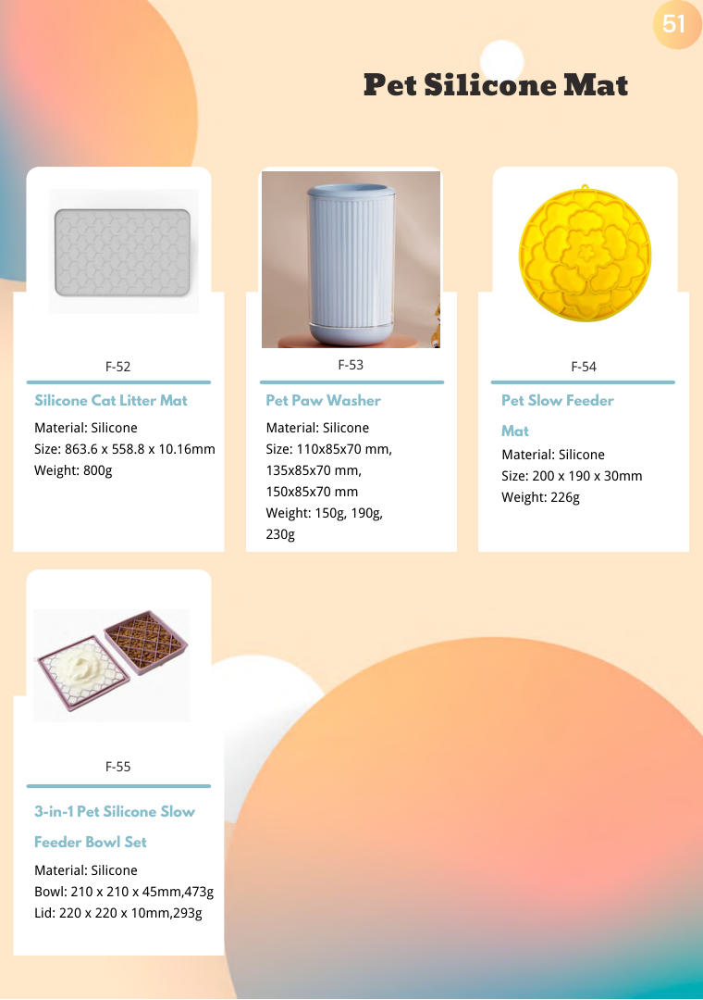
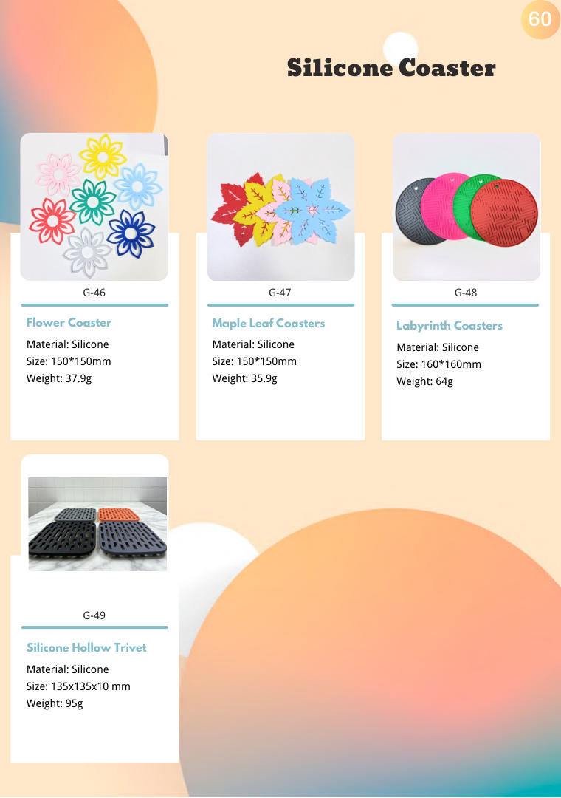

Silicone Coaster — Kitchen Gadgets
Silicone Coaster wholesale from Yongli — BSCI & ISO 9001 certified OEM/ODM manufacturer of silicone and stainless steel kitchenware since 2010. Full range of 10 catalog pages, custom OEM/ODM welcome.


About This Range
- Range: 10 catalog pages starting at PDF page 51
- Materials: Food-grade silicone, stainless steel, BPA-free plastic
- OEM & ODM: custom mold design, Pantone color matching, custom packaging and logo printing
- Exported to 34 countries across Europe, America, Middle East and beyond
- In-house R&D, tooling and mass production since 2010
Quality & Compliance
BSCI & ISO 9001 certified OEM/ODM manufacturer since 2010. Serving customers in 34 countries with one-stop OEM, packaging, design and logistics. Vision: Make Globe Trade Easy.
Products in this range
Product names and codes exactly as printed in the catalogue. Click a page number to jump straight to that page.
| Code | Product | Page |
|---|---|---|
| F-53 | Pet Paw Washer | p.51 → |
| F-54 | Pet Slow Feeder Mat | p.51 → |
| F-52 | Silicone Cat Litter Mat | p.51 → |
| F-55 | 3-in-1 Pet Silicone Slow Feeder Bowl Set | p.51 → |
| G-02 | Wave Drain Coaster | p.52 → |
| G-01 | Pyramid Silicone Coaster | p.52 → |
| G-03 | Round Printed Coaster | p.52 → |
| G-06 | Striped Drain Coaster | p.53 → |
| G-04 | Round Coaster | p.53 → |
| G-05 | Round Coaster | p.53 → |
| G-09 | Round Silicone Coaster | p.53 → |
| G-07 | Round Coaster | p.53 → |
| G-08 | Square Insulated Coaster | p.53 → |
| G-10 | Bottle Opener Coaster | p.54 → |
| G-11 | Round Luminous Coaster | p.54 → |
| G-15 | Bauhinia Coaster | p.54 → |
| G-13 | Square Printed Coaster | p.54 → |
| G-14 | Vehicle-Mounted Drain Anti-Skid Coaster | p.54 → |
| G-18 | Silicone Honeycomb Coaster | p.55 → |
| G-16 | Silicone Square Coaster | p.55 → |
| G-17 | Round Snowflake Coaster | p.55 → |
| G-21 | Retro Pattern Coaster | p.55 → |
| G-19 | Square Snowflake Coaster | p.55 → |
| G-20 | Silicone Expression Coaster | p.55 → |
| G-24 | Silicone Round Button Coaster | p.56 → |
| G-22 | Silicone Red Wine Coaster | p.56 → |
| G-23 | Round Coaster | p.56 → |
| G-27 | Silicone Tiger Coaster | p.56 → |
| G-25 | Square Teacup Pad | p.56 → |
| G-26 | Retro Carved Coasters | p.56 → |
| G-30 | Round Honeycomb Coaster | p.57 → |
| G-28 | Hollow Insulated Coaster | p.57 → |
| G-29 | Hollow Insulated Coaster | p.57 → |
| G-33 | Love Insulation Coaster | p.57 → |
| G-31 | Silicone Flower Coaster | p.57 → |
| G-32 | Plum Blossom Coaster | p.57 → |
| G-36 | Embossed Flower Coaster | p.58 → |
| G-34 | Anti-Skid Round Coaster | p.58 → |
| G-35 | Plum Blossom Teacup Pad | p.58 → |
| G-39 | Bauhinia Coaster | p.58 → |
| G-37 | Folding Coaster | p.58 → |
| G-38 | Retro Carved Coasters | p.58 → |
| G-42 | Colorful Light Coaster | p.59 → |
| G-40 | Round Hollow Coaster | p.59 → |
| G-41 | Rainbow Insulated Coasters | p.59 → |
| G-45 | Hollow Coaster | p.59 → |
| G-43 | Umbrella Coaster | p.59 → |
| G-44 | Smiley Face Coaster | p.59 → |
| G-48 | Labyrinth Coasters | p.60 → |
| G-46 | Flower Coaster | p.60 → |
| G-47 | Maple Leaf Coasters | p.60 → |
| G-49 | Silicone Hollow Trivet | p.60 → |
Range Highlights
Heat- and scratch-resistant silicone coasters that protect tables and countertops from hot mugs, cold glasses and condensation rings. Available in shapes and colors that double as a low-cost branded giveaway or retail add-on.
- Non-slip base keeps drinks stable on any surface
- Rinse-clean and dishwasher friendly
- Thin, flat profiles that store easily or hang on a hook
- Custom shapes, sizes and printed logos at low MOQ
Sourcing Note
Coasters are one of the easiest custom-branded items to start with - send your artwork and we will confirm color matching and print placement.
Every range in Kitchen Gadgets
Sections in printed order - each page lists the products and codes for that range.